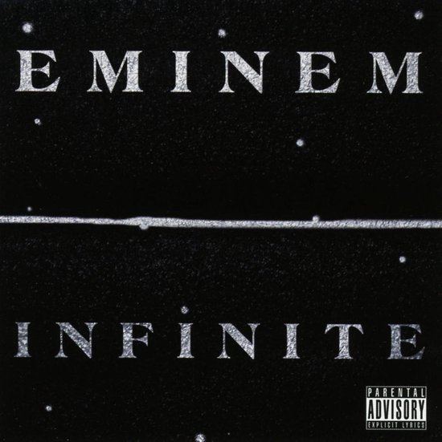
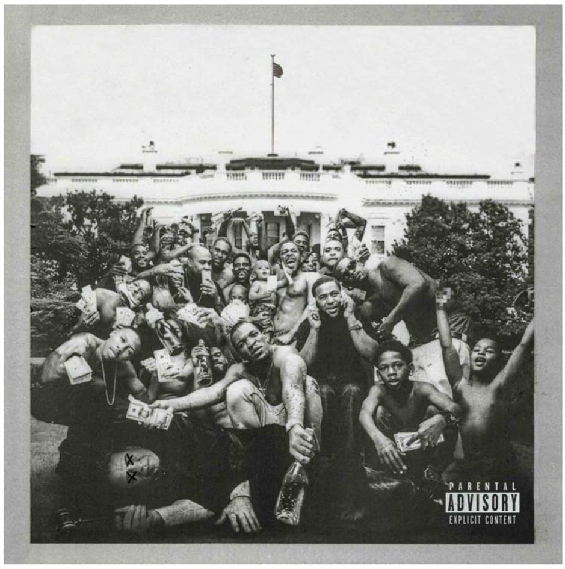
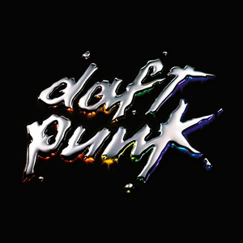

Mijn muziek
Favoriet nummer
Playlist
Logic - Aquarius III
Kendrick Lamar - A.D.H.D
Divad - Benz 190E
kryptogram - 4AM
Albums
Infinite (Eminem)

To Pimp a Butterfly (Kendrick Lamar)

Discovery (Daft Punk)

Festivals
Pukkelpop
Rock Werchter
Tomorrowland
Graspop
Dour
Pukkelpop
terug naar boven
Rock Werchter
terug naar boven
Tomorrowland
terug naar boven
Graspop
terug naar boven
Dour
terug naar boven